Everything I've Learned About Git
in the Last Year
(So You Don't Have To)
The Theme of This Talk
- Git is wonderful.
- Unfortunately, Git doesn't like you.
- Git’s command names are lies.
- Its output is cold and unfeeling.
- And have you read those man pages? 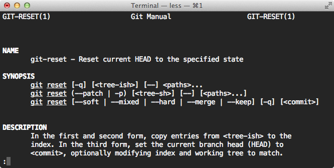
The Theme of This Talk
- Fortunately, I like you!
- And I know, like, 20% of git.
- This will be an infodump.
Git Wants You to Fight It
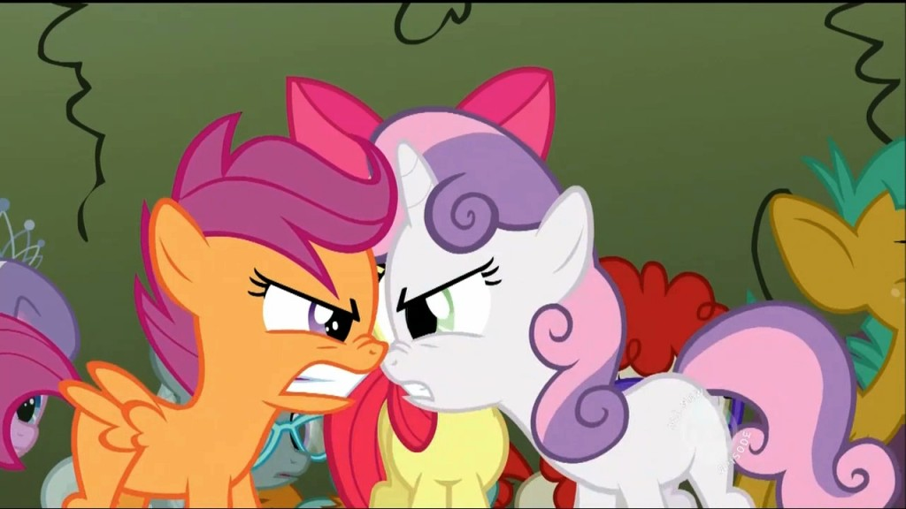But You Can Be Friends!
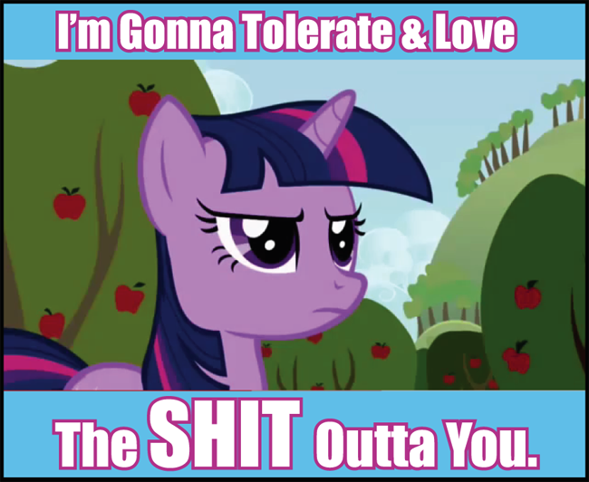How?
- Use good tools.
- Understand Git’s fundamental concepts.
- Know what every command you run actually does.
Setting Up
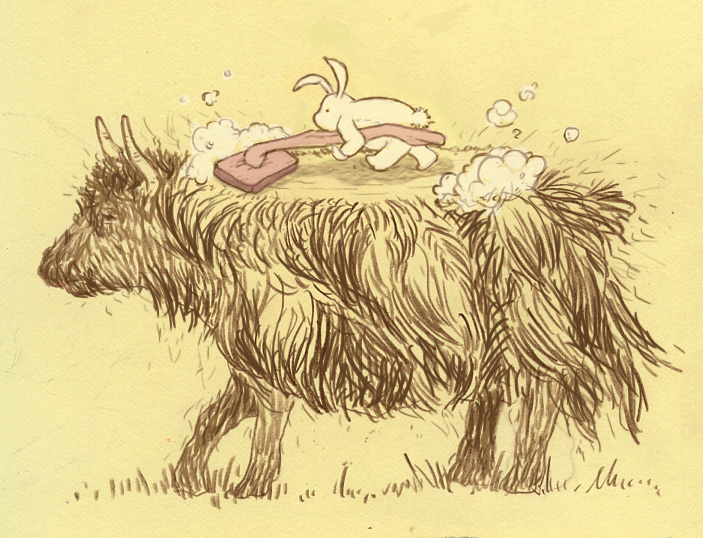Install the Latest
$ brew update
$ brew upgrade git
Yes, hub will wrap around the new version:
$ hub --version
git version 1.8.3.2
hub version 1.10.6
Git-ify Your Shell Prompt
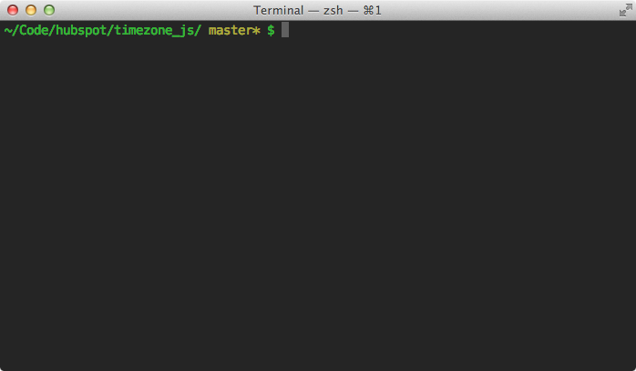Set Your Editor
# ~/.gitconfig
[core]
editor = subl -w
- Classy way:
git config --global core.editor "subl -w" - Alternatively, you can set your shell's
GIT_EDITOR. - Or just
EDITOR. sublneeds the-wflag to block Git until you close the tab.
Use Your Freedom of Choice
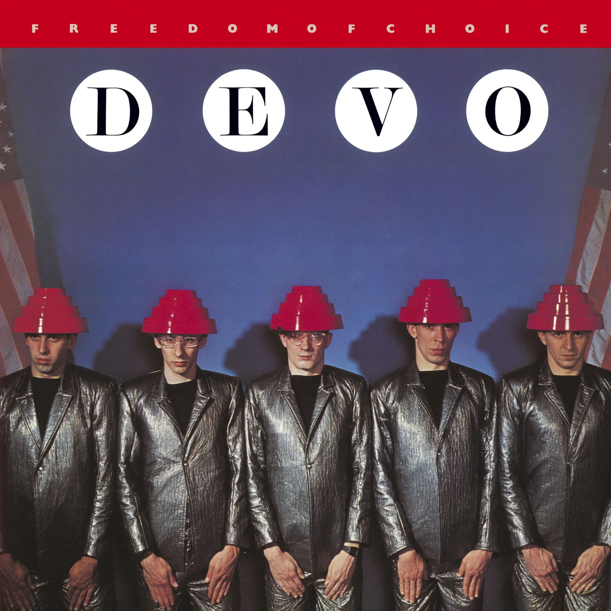Get a Git Gutter
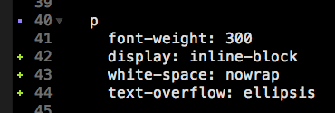Run (Some) Git Commands
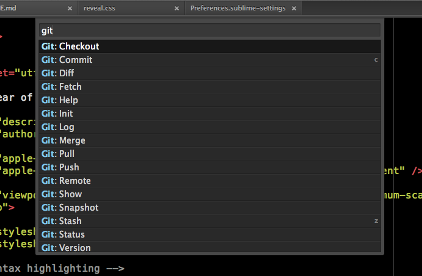Configuring Git
- The settings in a repo's
.git/configoverride those in~/.gitconfigwhen you're in that repo. - You can see all applicable settings with
git config --list. git config namespace.key valuesets a value in.git/config.- Add the
--globalflag to modify~/.gitconfiginstead.
Example: Setting Your Name and Email
$ git config --global user.name "Your Name"
$ git config --global user.name "you@hubspot.com" # public!
https://help.github.com/articles/keeping-your-email-address-private
Example: Adding a Global Gitignore
# ~/.gitignore_global
.DS_Store
$ git config --global core.excludesfile ~/.gitignore_global
Example: Setting an Alias
$ git config --global alias.unstage "reset HEAD"
$ git unstage some_file # git reset HEAD some_file
History of Git
$ git log --full-history --reverse

Version Control for Linux
First Commit
commit e83c5163316f89bfbde7d9ab23ca2e25604af29 Author: Linus Torvalds <torvalds@ppc970.osdl.org> Date: Thu Apr 7 15:13:13 2005 -0700 Initial revision of "git", the information manager from hell
Totally Distributed
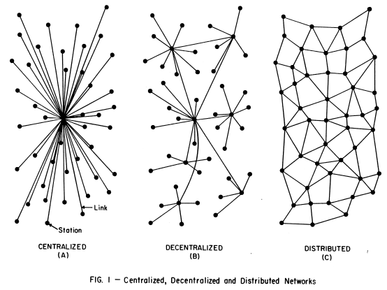Git vs. Mercurial
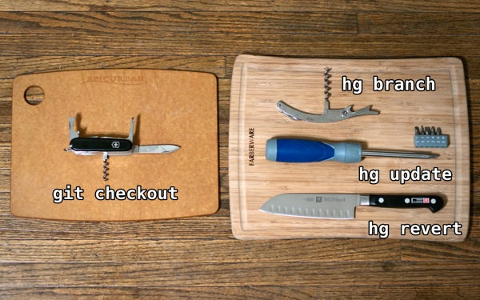Why Git Won
So…What is Git?
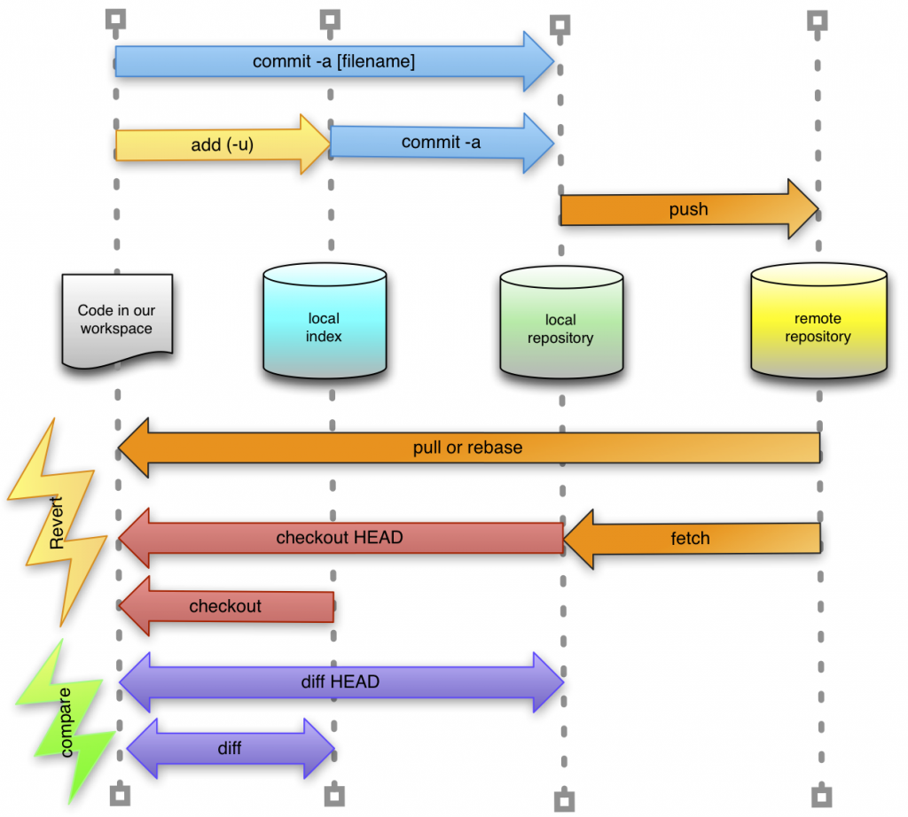It's All About the Commits
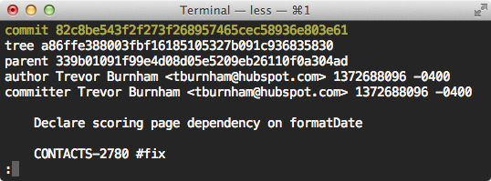Get to know git show.
One Hash Unlocks the Entire Universe!
Can't Hashes Conflict?
“A higher probability exists that every member of your programming team will be attacked and killed by wolves in unrelated incidents on the same night.”
What's a Branch?
“A branch is just a pointer to a commit.”
Huh! Then What's a Tag?
“A tag is just a pointer to a commit.”
Why Use Branches?
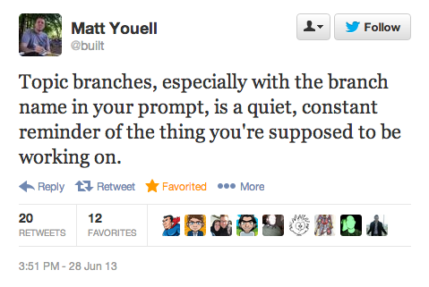What is the HEAD?
Moving the HEAD
(master) $ git checkout HEAD^ # parent commit
(fc8a3b) $
(master) $ git checkout HEAD~1 # equivalent
(fc8a3b) $
Checkout vs. Reset
“…update HEAD to set the specified branch as the current branch.”
—
git help checkout
“…set the current branch head (HEAD) to <commit>…”
—
git help reset
Pointers are Hard!
(master) $ git reset --hard HEAD~1
# changes what master points to!
(master) $ nooooooooooooo!! what was my hash!?
> command not found
(master) $ git reflog
> 2e22821 HEAD@{0}: reset: moving to HEAD~1
> 62fb09e HEAD@{1}: checkout: moving from 69a077 to master
(master) $ git reset --hard 62fb09e # fixed!
Staging and Committing
A Tale of Two Directories
- Working tree: The physical directory you've
cd-ed to, and everything in it. - Except the
.gitdirectory. - FOR THE SAKE OF ALL THAT IS GOOD AND HOLY, DO NOT TOUCH
.git!!! - Unless you're editing
.git/config. That's cool. - Index: Also known as the staging area. This is everything that will be in the next commit.
Make New Commits, But Keep The Old
(7e8fcg) $ git add README.md
# stage the current state of README.md
(7e8fcg*) $ git commit
# create a new commit with that one difference
(89a2bd) $
PSA: Life's too short to use git add <file>.
All the World's Staged
(master*) $ git add -A
# stage every indexed file in the working directory
(master*) $ git commit
(master) $
- This won't stage any files in the
HEAD's.gitignore. Then Git's like, "Changes? I don't see any changes!" - Likewise if you've done something crazy like
git update-index --assume-unchanged <file>.
(master*) $ git commit -a
# equivalent to the above in just one step
(master) $
You Only Live Once
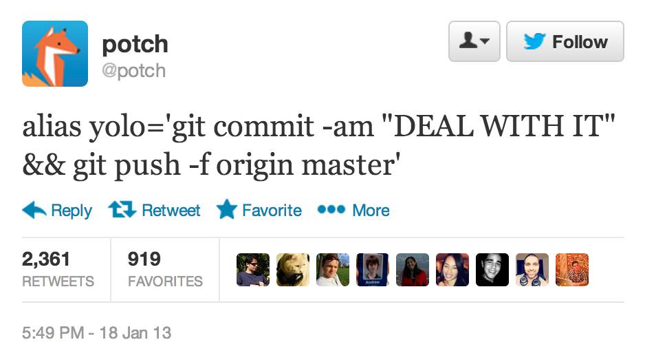Unstaging
(master*) $ git reset HEAD README.md
# unstage, don't change the working directory
(master*) $ git checkout HEAD -- README.md
# unstage and restore the HEAD version of README.md
-
Why does
git checkout -- README.mdrestore the HEAD version ofREADME.mdif it's unstaged, but has no effect if it's staged? -
Because the
git checkoutdefaults to using the index.
What Have I Done?
(master*) $ git status
(master*) $ git diff # show unstaged changes
(master*) $ git diff --cached # show staged changes
$ alias what-am-i-about-to-commit "git diff --cached"
Pro Tip: Verbose Commit
(master*) $ git commit --verbose
Communicating with Remotes
Managing Remotes
(master) $ git remote # use --verbose to see URLs
origin
(master) $ git remote add other git://github.com/otherguy/project.git
(master) $ git remote rm other
Tracking Branches
(master) $ git branch
master
(master) $ git branch -r
origin/master
origin/feature
(master) $ git branch feature origin/feature
feature is now tracking origin/feature.
Pull vs. Fetch
(master) $ git fetch origin # update origin/x branches
(master) $ git pull origin # for each origin/x branch, update and merge into x
My Favorite Aliases
alias ggpull="git pull origin $(current_branch)"
alias ggpush="git push origin $(current_branch)"
What's a Merge, Really?
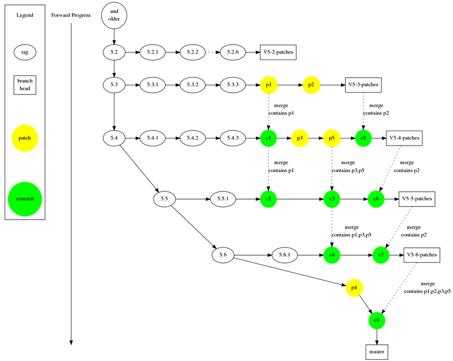The Simple Case
1--2--+ master | 3--4 feature
(master) $ git merge feature
1--2--3--4 master
This is a fast-forward. Don't do this.
The Simple Case, Redux
1--2--+ master | 3--4 feature
(master) $ git merge --no-ff feature
1--2--+-----5 master | | 3--4--+
5 is a merge commit. Merge commits are your friend, because you can revert them in one command:git revert -m 1 <commit>
The Complicated Case
1--2--3--4 master | +--5--6 feature
(master) $ git merge feature
3--4 | | 1--2--+ +--7 master | | 5--6
This is a three-way merge.
The three "ways" are commits 4, 6, and 2.
Two Parents!?
3--4 | | 1--2--+ +--7 master | | 5--6
Commit 7 is a merge commit with two parents. The one that was originally on master (commit 4) gets to be the first parent.
(commit7) $ git checkout HEAD^
(commit4) $
(commit7) $ git checkout HEAD^2
(commit6) $
The Wrong Way To Log
(master) $ git log
(master) $ git checkout HEAD~2
(d2e7d2) $ WTF? The log said this was 3 commits ago!!
> command not found
The Pretty Way To Log
(master) $ git log --graph
The Right Way To Log
(master) $ git log --first-parent
Enter Rebase
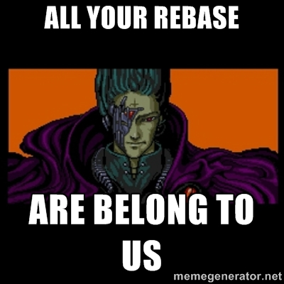Rewriting History
1--2--3--4 master | +--5--6 feature
(feature) $ git rebase master
1--2--3--4 master | +--3--4--7--8 feature
Commits 7 and 8 are copies of commits 5 and 6 with different ancestries and commit timestamps.
The Awesomest Git Command Ever
1--2--3--4 master | +--5--6 feature
(feature) $ git rebase -i master
pick f8fcfe4 Add icons
pick b2a339f Fix typo
# Commands:
# p, pick = use commit
# r, reword = use commit, but edit the commit message
# e, edit = use commit, but stop for amending
# s, squash = use commit, but meld into previous commit
# f, fixup = like "squash", but discard this commit's log message
# x, exec = run command (the rest of the line) using shell
#
# These lines can be re-ordered; they are executed from top to bottom.
#
# If you remove a line here THAT COMMIT WILL BE LOST.
Pro Tip: Rebase on Pull
$ git config --global pull.rebase true
- No more superfluous merge commits on pull!
-
Caution: If there are conflicts, abort! Use
git pull --no-rebaseto override the default.
More Tools
Fix Your Last Commit
(master) $ git commit -m "Lame commit message"
(master) $ git commit --amend
(master*) $ git commit -m "Oops, forgot to add README.md"
(master) $ git add README.md
(master) $ git commit --amend
Track Down Bugs with Bisect
(master) $ git bisect start # There's a bug!
(master) $ git bisect bad # It's on master!
(master) $ git checkout HEAD~64
(f8b451) $ git bisect good # This commit doesn't have the bug!
(b8cfas) $ git bisect reset # Bad commit found. Now let's fix it.
Copy Commits with cherry-pick
(feature) $ git commit -m "Fix typo"
> [feature d6b849c] Fix typo
(feature) $ git checkout master
(master) $ git cherry-pick d6b849c
> [master 288c050] Fix typo
The hashes will always be different because the committer timestamp (and perhaps the commiter name) are different.
Stash Changes
(feature*) $ git stash
(feature) $ git checkout master
(master) $ git stash pop
(feature) $ git stash show # what-all do I have stashed?
(feature) $ git stash --keep-index # leave everything that's going in to the next commit
(feature) $ git stash --include-untracked
Show Only Unmerged Commits
(feature) $ git log HEAD ^master # show every commit in feature that's not in master
Note: git log == git log HEAD, but git log ^master won't show any commits.
More Resources
- Git Immersion - A hands-on tutorial
- Pro Git - A free online reference
- Version Control with Git - An excellent O'Reilly book
What About GitHub!?
- Git and GitHub Secrets — Awesome talk by Zack Holman